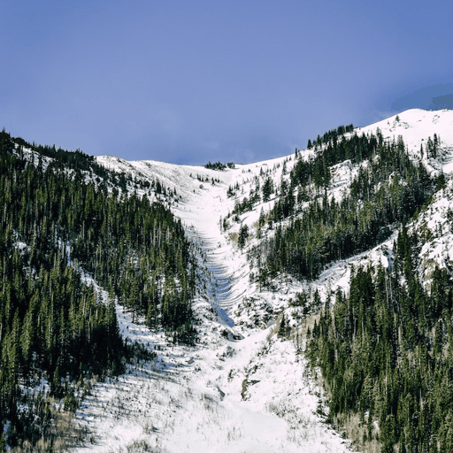
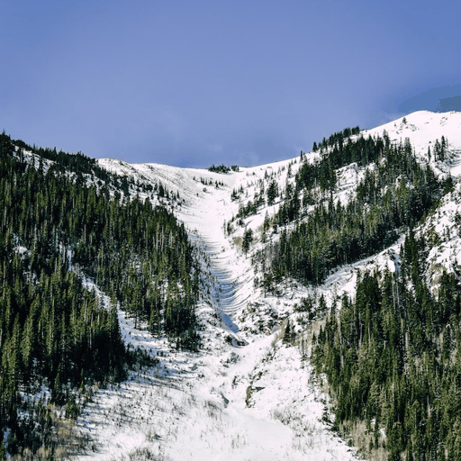
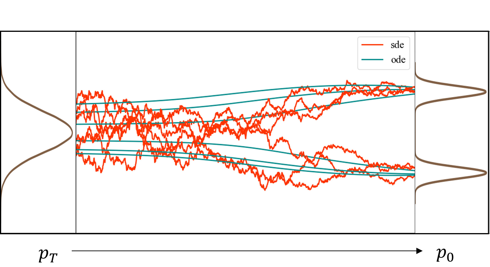
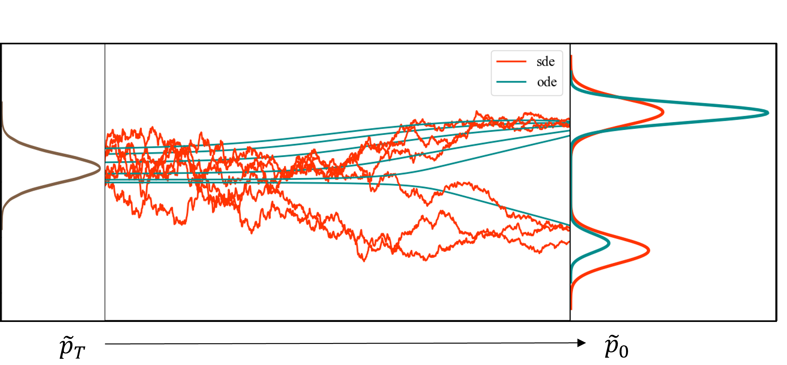
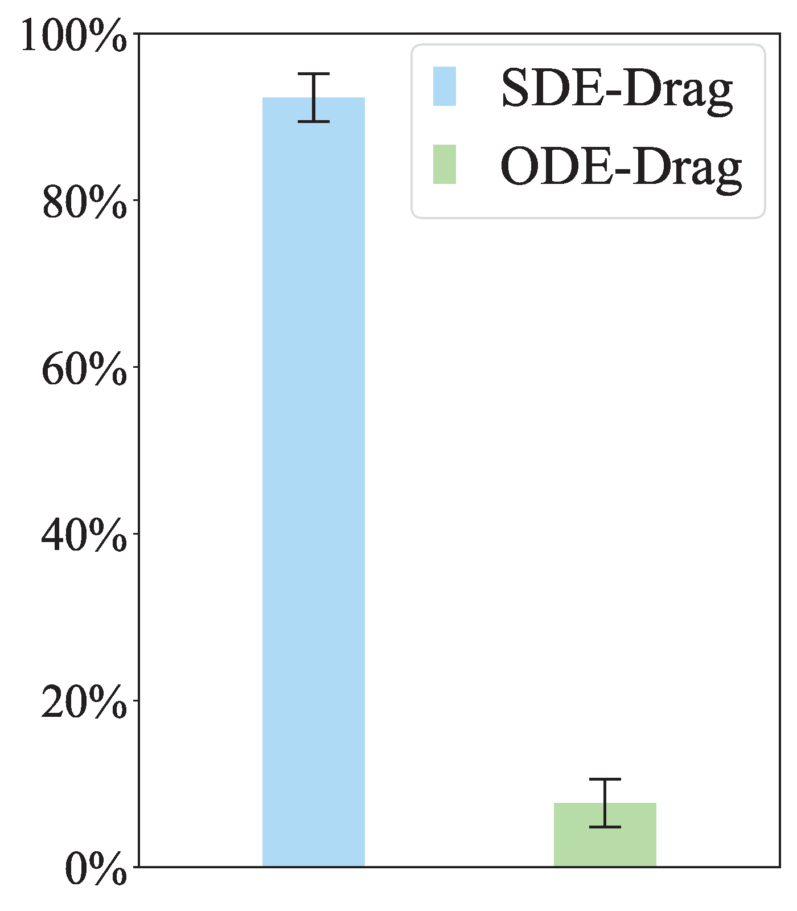
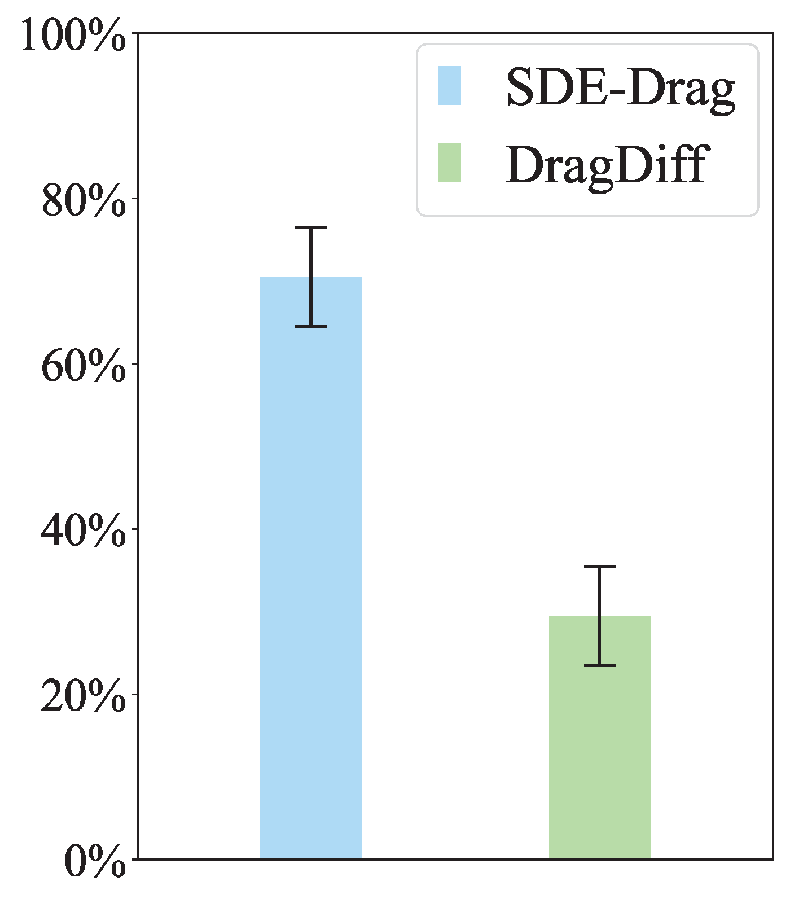
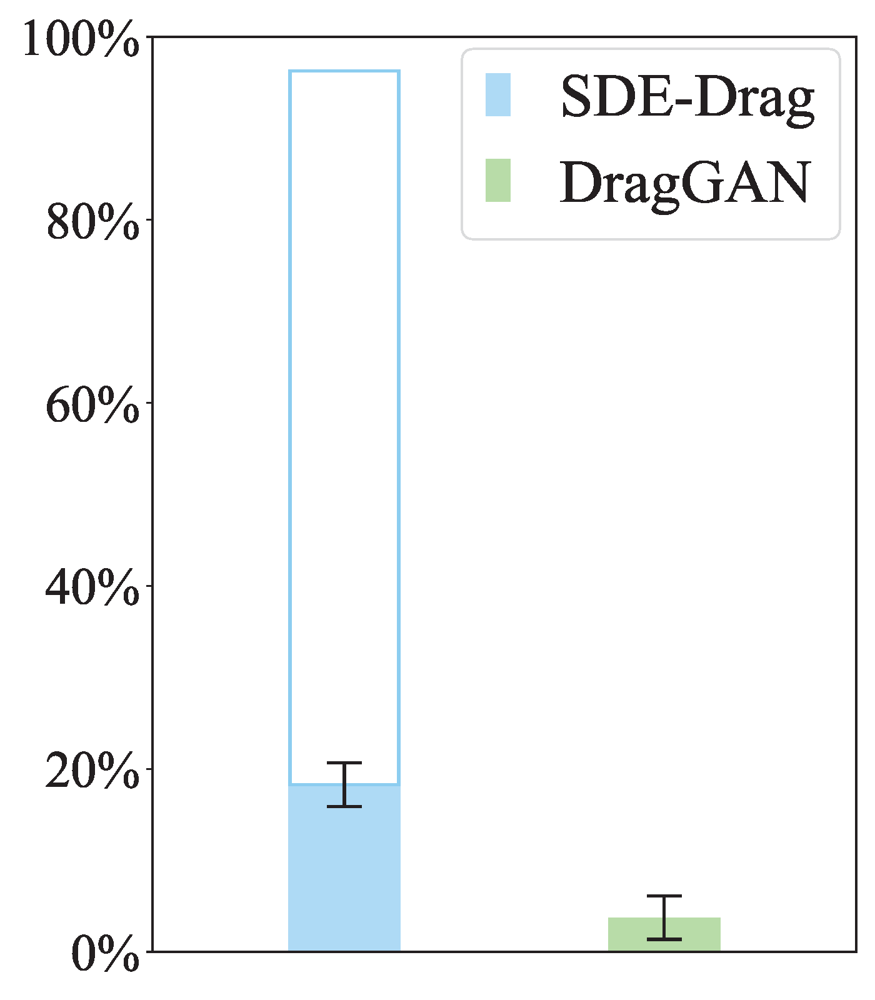
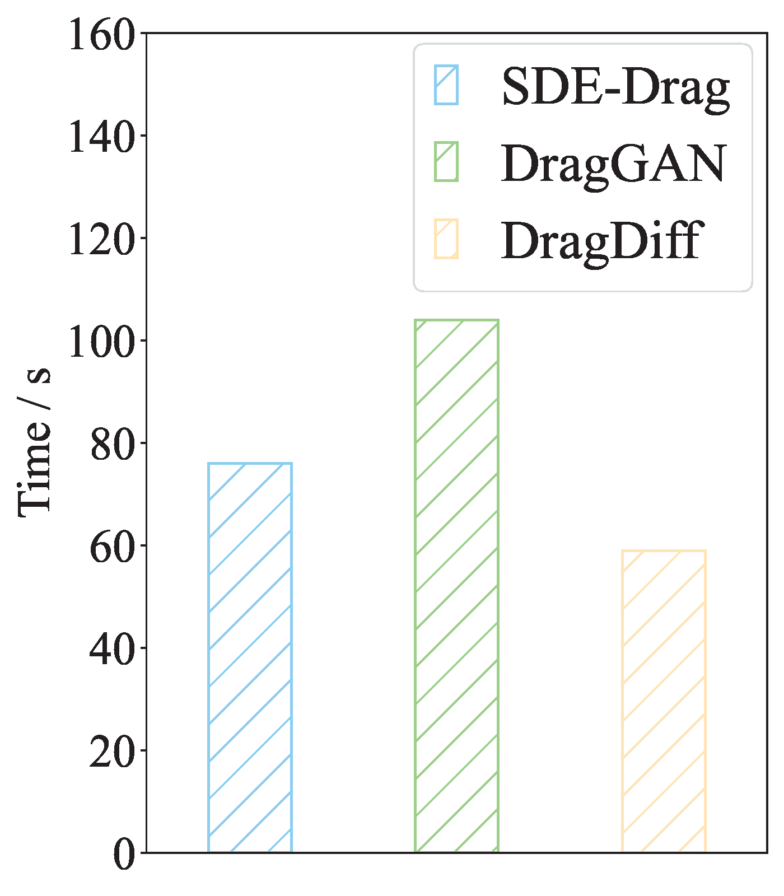

The Blessing of Randomness: SDE Beats ODE in General Diffusion-Based Image Editing


 



We present a unified probabilistic formulation for diffusion-based image editing, where a latent variable is edited in a task-specific manner and generally deviates from the corresponding marginal distribution induced by the original stochastic or ordinary differential equation (SDE or ODE). Instead, it defines a corresponding SDE or ODE for editing. In the formulation, we prove that the Kullback-Leibler divergence between the marginal distributions of the two SDEs gradually decreases while that for the ODEs remains as the time approaches zero, which shows the promise of SDE in image editing. Inspired by it, we provide the SDE counterparts for widely used ODE baselines in various tasks including inpainting and image-to-image translation, where SDE shows a consistent and substantial improvement. Moreover, we propose SDE-Drag – a simple yet effective method built upon the SDE formulation for point-based content dragging. We build a challenging benchmark (termed DragBench) with open-set natural, art, and AI-generated images for evaluation. A user study on DragBench indicates that SDE-Drag significantly outperforms our ODE baseline, existing diffusion-based methods, and the renowned DragGAN. Our results demonstrate the superiority and versatility of SDE in image editing and push the boundary of diffusion-based editing methods.

In our formulation, the input image undergoes inversion or noise perturbation first, followed by manipulation or domain transformation to generate a task-specific latent variable. Starting from it, a stochastic differential equation (SDE) or a probability flow ordinary differential equation (ODE) is defined by a pretrained diffusion model.
We conduct a toy simulation on the Gaussian mixture data to illustrate our theoretical results (Theorem 3.1, Theorem 3.2 and Proposition D.1) clearer.
 Left panel: Both ODE and SDE samplers match the data if denosing from standard gaussian distribution. Right pannel: ODE fails to recover the data distribution while SDE succeeds though the prior distribution mismatch with standard gaussian distribution.

We conduct experiments on various tasks including inpainting, image-to-image translation where the SDE counterparts show a consistent and substantial improvement over the ODE baselines. For the quantitate comparison please see the paper.
   The first three result figures display the preference rates (with 95% confidence intervals) of SDE-Drag relative to ODE-Drag, DragDiffusion, and DragGAN. SDE-Drag significantly outperforms all competitors. The empty box in the third result denotes the proportion of open-domain images in DragBench that DragGAN cannot edit. The fourth result figure shows that the average time cost per image is comparable for all methods.
We present a unified probabilistic formulation for diffusion-based image editing encompassing a wide range of existing work. We theoretically show the promise of the SDE formulation for general image editing. We propose a simple yet effective dragging algorithm (SDE-Drag) based on the SDE formulation and a challenging benchmark with 100 open-set images for evaluation. Our results in inpainting, image-to-image translation, and dragging clearly demonstrate the superiority and versatility of SDE in general image editing. Notably, SDE-Drag can improve the alignment between the prompt and sample from advanced AI-painting systems like Stable Diffusion and DALL 3.
Many thanks to Fengqi Zhu for creating this page and tidying up the code!
@article{nie2023blessing,
title={The Blessing of Randomness: SDE Beats ODE in General Diffusion-based Image Editing},
author={Nie, Shen and Guo, Hanzhong Allan and Lu, Cheng and Zhou, Yuhao and Zheng, Chenyu and Li, Chongxuan},
journal={arXiv preprint arXiv:2311.01410},
year={2023}
}